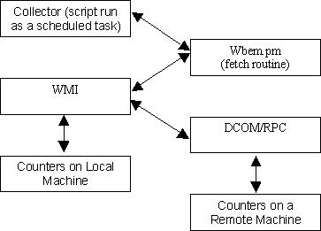

Draft 3: April 6, 2001
Windows 2000 includes Windows Management Instrumentation (WMI), an implementation of the Web-based Enterprise Management (WBEM) industry standard. Hardware, operating system, and application (such as SQL Server, and IIS) performance data counters are available through WMI.
Cricket is an open-source software tool originally designed for network monitoring and trend analysis on UNIX platforms. The source data monitored by Cricket is not restricted to network data and it has been successfully applied to monitor hosts and applications at WebTV. Cricket is written in Perl, and its underlying data storage technology, RRDtool, is available for Win32 platforms. Cricket includes a CGI component for monitoring access from any web browser.
This document describes the process of installing Cricket on Windows 2000, running Cricket with Internet Information Server (IIS), and using Cricket to collect data from WMI counters. It assumes some familiarity with Windows 2000, IIS, WMI, Perl Modules, and Cricket.
You may wish to review John Zola's document Installing Cricket on NT 4.0. He discusses some of the details omitted from this document (such as compiling RRDs).
Deploying Cricket on Windows 2000 to monitor WMI relies on a number of Perl packages and some external software. Fortunately, these packages and software are all available and compatible with Windows 2000. The following is a list of the components along with their provider.
Perl Packages:
Binaries:
Before you begin, install Windows 2000 Server with IIS. You will need the Microsoft Visual C++. These instructions assume the default configuration for IIS.
1. Create a monitoring account in the domain. Give this account administrator access on the monitoring machine (the machine that will run Cricket). On the remote hosts to be monitored, set the proper permissions for the monitoring account (this will require the assistance of your domain administrator).
a. On each remote host, the following WMI permissions need to granted to the monitoring account for the namespace that includes the counters you wish to monitor: Execute Methods, Provider Write, Enable Account, and Remote Enable (Windows 2000 sets the first three to allow by default for Everyone). This can be done through scripting, or the WMI Control management snap-in (run wmimgmt.msc on a Windows 2000 host).
b. WMI permissions are not sufficient alone to access some system objects/properties you may wish to monitor if these objects/properties are managed through the host or domain security policy. On the remote Windows 2000 computer, use the Local Security Policy control panel applet (under Administrative Tools). For example, you may need to change the settings on Profile System Performance under Local Policies\User Rights Assignment.
c. You can use the WMI program, wbemtest.exe (found in the %system32%\wbem directory) to confirm permissions are set correctly. If step (a) is not completed for a host, you will receive an access denied message. If step (b) is not completed, WMI queries will seem to work, but NULL or zero values will be returned (this can be hard to determine because some fields may legitimately be NULL or zero).
d. If you have security difficulties, one option is to make the monitoring account an administrator on each remote host it will monitor. But the “right thing to do” is for the monitoring account to be a regular domain user will just the additional permissions it needs for read only access to the WMI counters and objects to be monitored.
2. Login to the monitoring machine using the monitoring account.
3. Install Perl from the ActiveState distribution. Notes on the ActiveState installer: installing PerlScript and Perl for ISAPI is not required. Enable the options registering Perl with the Web Server and adding the Perl bin directory to your path.
4. Install Berkeley DB. Following the instructions included with the distribution. Your goal is compile the DLL libdb31.dll. Once compiled, make certain this DLL is on your path..
5. Install Cricket. You may find John Zola's Installing Cricket on NT 4.0 helpful. The remainder of the document refers to the installation directory as <install dir>. The cricket subdirectory of <install dir> contains the Cricket source code.
6. Install the additional Perl packages. For Perl extensions (a package that includes a compiled DLL), the extension build must be compatible with the build of ActiveState installed. Currently, ActiveState builds 5xx are Perl 5.005 and ActiveState builds 6xx are Perl 5.6. The packages DB_File, Digest-MD5, and TimeDate are available at the ActiveState Perl Package Archive for both 5xx and 6xx ActiveState builds. They can be installed via the utility ppm. You will need to compile the source for the RRDs package after installing ActiveState. The source of RRDs is available from www.rrdtool.org. After compilation, manually install this packages to the site/lib subtree of your Perl installation. SNMP_Session package does not need to be compiled because it does rely on an auxiliary DLL. After you download the archive, extract the *.pm files and install them in your site/lib subtree.
7. Configure IIS. Start the Internet Services Manager.
a. Create a virtual directory called crickethome. Set the local directory to <install dir>.
b. Register *.cgi files to be processed by the Perl executable. Right-click properties on the crickethome virtual directory. Disable read, write, and directory browsing. Set Execute Permissions to “None”. Click the Configuration button. Look at the settings for the *.pl extension. Then create a new Application mapping for *.cgi and enter the same information.
c. Enable permissions on the cricket subdirectory of <install dir>. Again, right-click properties. Grant read and set Execute Permissions to “Scripts and Executables”.
d. Stop and restart the Default Web Site.
e. Update the environment variable settings in grapher.cgi and mini-graph.cgi. This is because the HOME environment variable is not available running within IIS. <install dir>/cricket and gCacheDir to <install dir>/cricket-cache. Modify the $ENV{‘HOME’} setting in the fixHome() subroutine to <install dir> (the comments in the grapher.cgi source code refer to this as the ‘brute force’ method). Use forward slashes in pathnames. Do the same with mini-graph.cgi. In mini-graph.cgi you may also need to replace 'perl' with the complete path to the Perl executable (c:/perl/bin/perl) on the exec() call mini-graph.cgi uses to invoke grapher.cgi in the doGraph() subroutine.
8. Create a scheduled task to run the Cricket script collect-subtrees (this the a wrapper script which invokes the Cricket collector and performs logging).
a. Set the HOME environment variable for the monitoring account to <install dir> (this can be done via a tab on the control panel System applet). This HOME variable need only be set on the monitoring machine for the monitoring account.
b. Click on Add Scheduled Task under Control Panel\Scheduled Tasks. Click through the wizard, choose a dummy application, give it the name “Cricket Collector”, and choose a dummy run schedule. Enter the username and password the monitoring account. Enable the “Open advanced properties” check box and click Finish.
c. Now configure the real task. Enter a command line similar to the following (substituting paths on your system as appropriate):
c:\Perl\bin\perl <install dir>/cricket/collect-subtrees
Set the “Start in” field to <install dir>
d. Select the Schedule tab. Schedule the task daily; then click the Advanced button. Don’t choose an End Date. Enable and complete the Repeat task section. Set the task to run every 5 minutes (or other interval, this should match the rrd-poll-interval you are using). Set the duration to 23 hours and 55 minutes (or 24 hours – whatever interval you are using).
e. Back on the Task tab, uncheck the Enabled checkbox.
9. Create and compile a Cricket config tree. Configure the subtree-sets file (in <install dir>\cricket). Refer to Cricket documentation and the next section on this document, Monitoring WMI Counters. After successful compilation, you may choose to run the collector manually to check for any errors.
10. Enable the scheduled task you created in step (8).
11. After a few minutes, check log files in <install dir>/cricket-logs to verify everything is running okay. Test the grapher on the monitoring machine with the URL: http://localhost/crickethome/cricket/grapher.cgi

As described in the Cricket documentation, each data collection mechanism has a scheme, which describes a mapping between the ds-source tag of the data source dictionary entry and the list of arguments passed to the fetch module. For WBEM, the scheme is:
wbem:host:namespace:class:field:predicate
The arguments host and namespace are used to establish a
connection to either the local or a remote machine. The arguments class, field,
and predicate are use to construct a WQL query.
No username and password are specified for remote queries.
The DCOM layer automatically substitutes the username and password of the
monitoring account when a connection is established to a remote machine.
Host is a Win2K host name. Host should be blank or unspecified for the local machine.
Namespace refers to the WMI namespace to be queried. Most of the interesting WMI classes are under Root\CIMV2. Backslashes in the namespace specification must be escaped.
WQL is a language very similar to SQL for querying WMI classes. A WMI class can be thought of as a table, with one or more records, or instances. The attributes of the class are the table fields. Conceptually, the class, field, and predicate for a WBEM data source generate the query:
Select field from class where predicate
If the class of interest has only once instance, then the
predicate argument can be omitted. If the class has multiple instances, you
should specific a predicate to restrict the result to a single instance.
Although Cricket supports multiple instances for SNMP data sources, this is not
the case for WBEM data sources. Each data source must be mapped to exactly one
WMI instance; in other words, each WQL query must be a singleton select.
Similar to the Cricket SNMP fetch modules, wbem.pm
consolidates multiple requests to the same remote host and the same WMI class
(table) as long as the data sources are within the same target (RRD file).
Separate targets requiring remote connections to the same host will result in
separate connections.
wbem:host:Root\\CIMV2:Win32_Process:ReadOperationCount:Name='process.exe' wbem:host:Root\\CIMV2:Win32_Process:WriteOperationCount:Name='process.exe'
If these data source are in the same target, wbem.pm will establish a single connection to host as username and issue the WQL query:
Select "ReadOperationCount", "WriteOperationCount" from "Win32_Process" where Name = 'process.exe'
If you are uncertain as to what can be monitored via WMI, you can use the WMI Object Browser included with the WMI SDK. You can test the semantics and syntax of WQL queries through wbemtest.exe, a utility included on all Win2K systems.
Thanks to Brian Gann, Cary Yee, Adam Meltzer, Jeff Allen, and John Zola.
Questions or comments: contact Jake Brutlag.